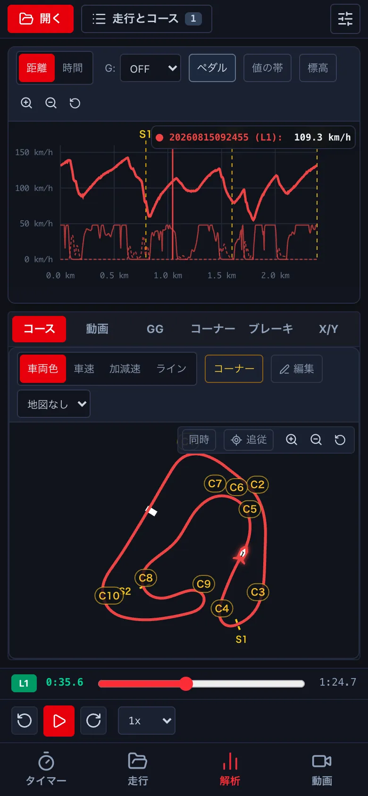
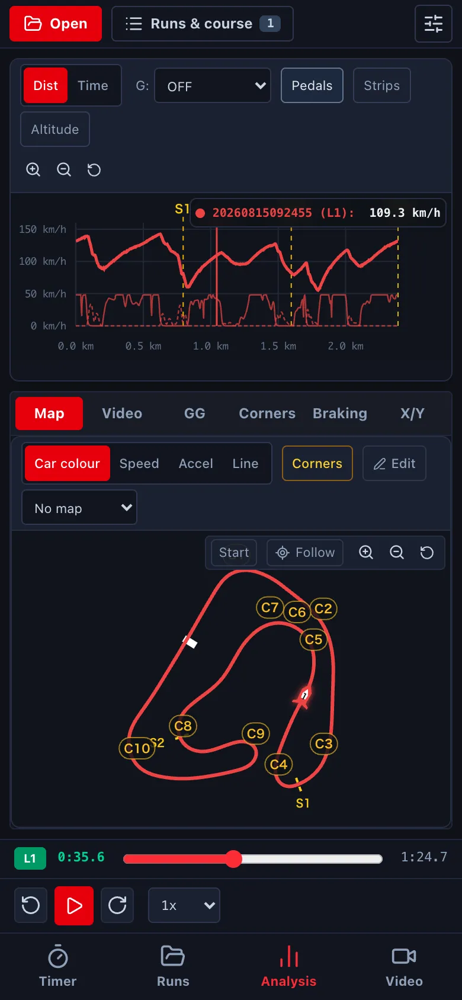
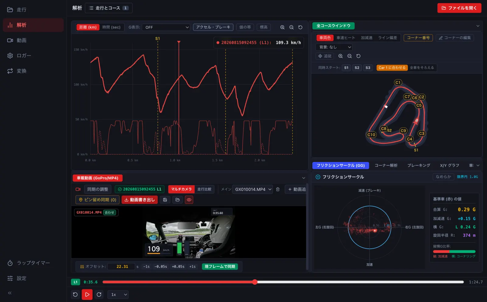
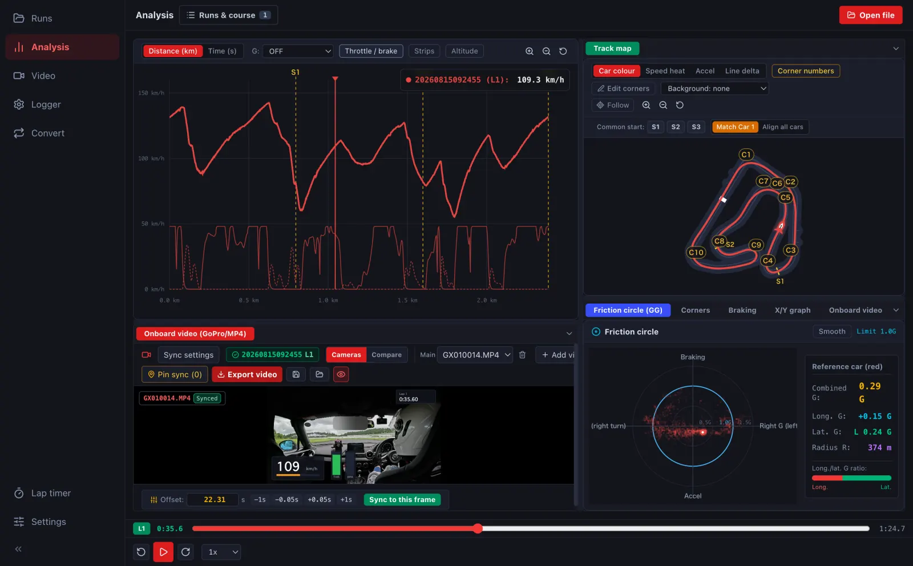
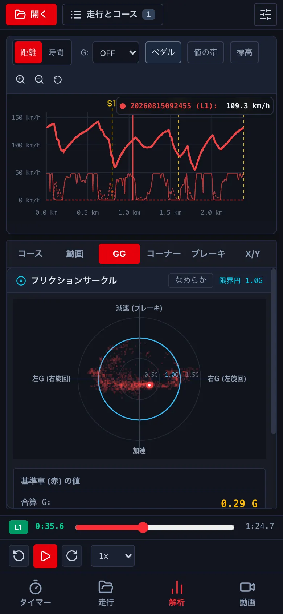
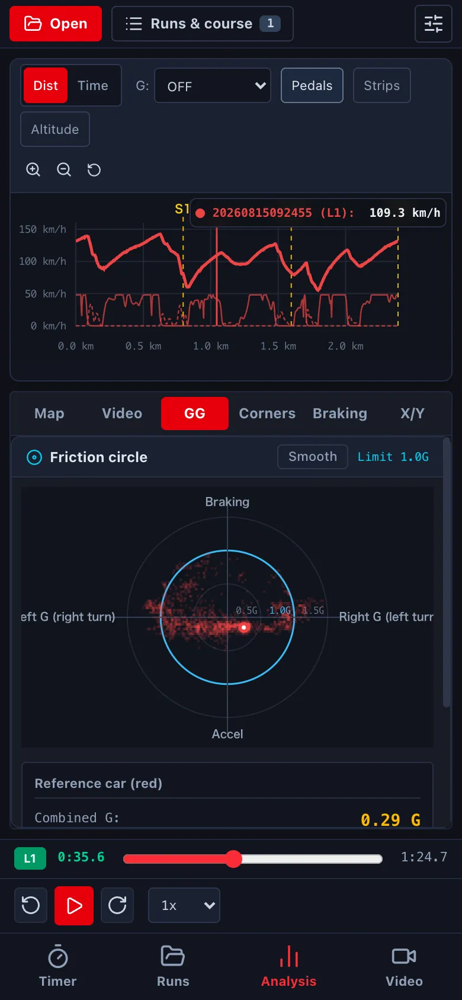

解析の画面の見方Reading the analysis screen
速度のグラフとコースマップで、周のどこで速く・遅く走ったかを見ます。グラフ・地図・動画は同じ位置で動きます。The speed graph and course map show where on the lap you were fast or slow. The graph, map and video all move together.
-
上は速度のグラフです (横は距離か時間)。黄色の点線はセクター、縦の赤い線は今の位置です。グラフを押すと、その位置へ動きます。The top graph is speed (by distance or time). Yellow dashed lines are sectors; the vertical red line is the current position. Click the graph to jump there.




- 下の欄の コース がコースマップです。車の位置・走った線 (色分け: 車両色・車速・加減速・ライン)・コーナーの番号が出ます。The Map tab below is the course map: car position, your line (coloured by car, speed, acceleration or line delta) and corner numbers. 右上がコースマップです。車の位置・走った線 (色分け: 車両色・車速・加減速・ライン)・コーナーの番号が出ます。The course map is at the top right: car position, your line (coloured by car, speed, acceleration or line delta) and corner numbers.
- いちばん下の段で、再生・5 秒戻す/進める・再生の速さを変えます。Use the bottom bar to play, skip 5 s back or forward, and change the speed.
-
下の欄は、GG (縦と横の G の散らばり)・コーナー・ブレーキ・X/Y に切り替えられます (→ D3)。The bottom panel switches to GG (spread of longitudinal and lateral G), Corners, Braking and X/Y (→ D3). 右下は、フリクションサークル (GG)・コーナー解析・ブレーキング・X/Y グラフに切り替えられます (→ D3)。The bottom-right panel switches between friction circle (GG), corners, braking and X/Y graph (→ D3).


- 見る周を替えるときは、上の 走行とコース で Car 1 の周を選びます。To change the lap, pick Car 1's lap in Runs & course at the top.
ブラウザ版では、ログのファイルを ファイルを開く で開くと、この画面になります。In the browser version, open a log with Open file to get this screen.